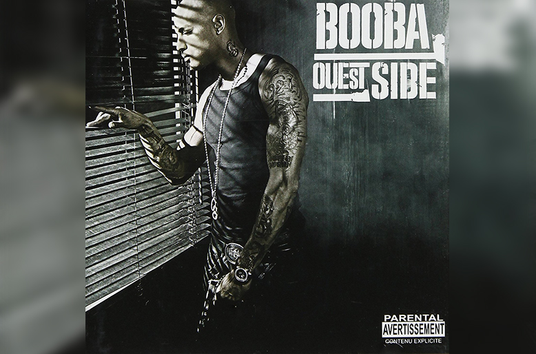
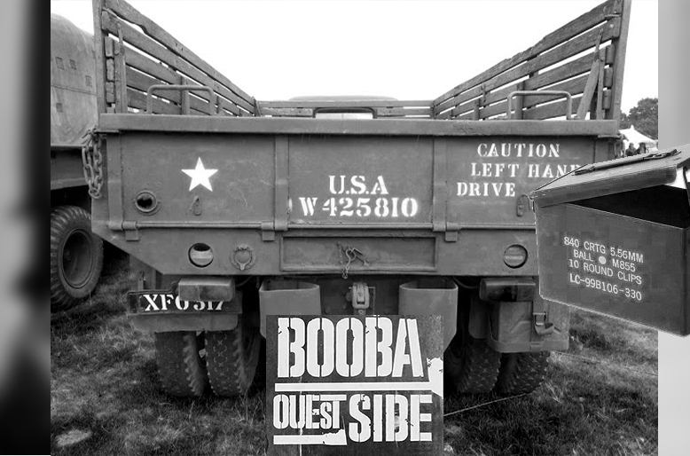

2006,troisième album de la carrière solo du rappeur
Dévoilé en 2006, l’album Ouest Side de Booba, troisième de la carrière solo du rappeur, s’inspire généreusement d’une photo incontournable de Malcolm X.Plus que d’être de simples photographies reflétant un projet, les pochettes relèvent parfois un travail artistique oublié. L’un des plus grands chefs d’oeuvre de Booba, Ouest Side, en est un formidable exemple. D’un premier abord, on remarque "le Duc", masqué derrière les rideaux fermés de ce qui semble être une chambre, tenant fermement une arme à la main.
Le mur lugubre derrière lui laisse imaginer un lieu plutôt pauvre, comme s’il était en cavale et qu’il vagabondait entre plusieurs appartements, cherchant à se protéger de la police.
La typograhie de l’album de type stencil : “Booba – Ouest Side”, par exemple utiliser souvent dans l'armée pour les caisses d'armements poursuit cette idée général que le rappeur est en guerre .
Malcolm X, l'apôtre de la violence
C’est néanmoins une référence incroyable à l’un des clichés les plus connus de Malcolm X. Véritable figure des noirs afro-américains, Malcolm X a connu une fin de vie mouvementée, menacé de mort par la Nation Of Islam qu’il a quitté précipitamment. Louis Farrakhan, dirigeant du groupe précise qu’un “tel homme est digne de mourir”.
“Yes, I’m an extremist. The black race… is in extremely bad condition. You show me a black man who isn’t an extremist and I’ll show you one who needs psychiatric attention!”
En septembre 1964, pour illustrer la résistance insoutenable du leader des Black Panthers, Malcolm Little capture l’un de ses moments de vie, alors qu’il regarde à travers la fenêtre, avec à la main une carabine M1. Finalement, trois membres de Nation Of Islam l’assassineront un an plus tard.
Booba x Malcom X
Un choix loin d'être anodin pour Booba dans sa direction artistique de faire référence à malcom X. Iterprétation moderne et français d'une figure noir dans un pays qui ne l'accepte pas. La musique de Booba dans cet album confirme cela entre ségrégation raciale et poursuite par mort, la peur de se faire assassiner .
Article par Balp Wilfried. Photographs by Armen djerrahia.